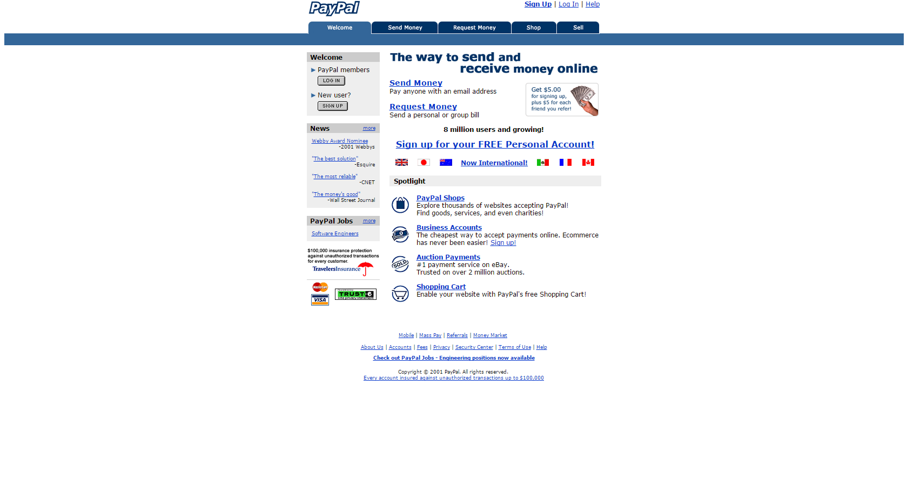

Startup Timelines
Startup Timelines
PayPal Collection
PayPal - Snapshot June 30, 2001
June 30, 2001
"PayPal"

Source: Wayback Machine - Internet Archive. Please
Donate
to the Internet Archive today.
Comments
Please enable JavaScript to view the
comments powered by Disqus.